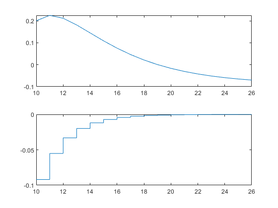
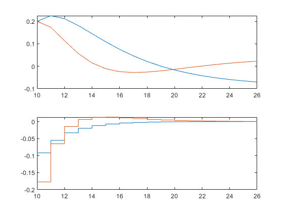
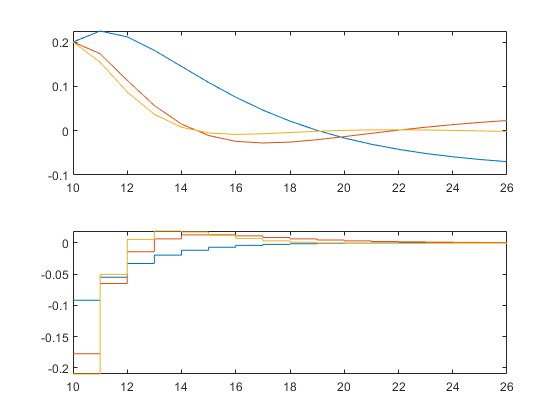
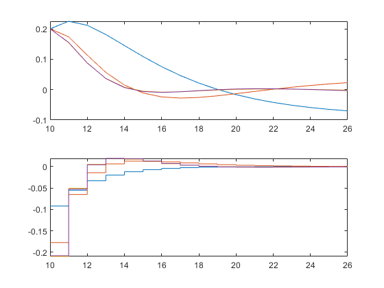

Contents
clear all, clc
model of the system
am = 0.8; bm = 0.6; cm = 1;
A = [am 0; cm*am 1];
B = [bm; cm*bm]; C = [0 1];
given
for NN = 1:4
ki = 10;
x = [0.1 0.2]';
Np = 16; Q = [0 0; 0 1]; R = 1; a = 0.6; N = [1 2 3 4];
[Al, L0] = lagd(a, NN);
L = [];
L(:, 1) = L0;
N_sim = 16;
for k = 2:N_sim
L(:, k) = Al*L(:, k-1);
end
R_L = R*eye(NN); omega = 0; psi = 0;
for m = 1:Np
phi = 0;
for i = 0:m-1
phi = phi + (A^(m-i-1)*B*L(:, i+1)')';
end
omega = omega + phi*Q*phi';
psi = psi + phi*Q*A^m;
end
omega = omega + R_L;
n = -inv(omega)*psi*x;
buf = [10 C*x]; buf2 =[];
for k = 1:Np
deltau = n'*L(:, k);
buf2 = [buf2; [k+9 k+10]' [deltau deltau]'];
x = A*x + B*deltau;
buf = [buf; k+10 C*x];
end
subplot 211, plot(buf(:, 1), buf(:, 2)), hold on
subplot 212, plot(buf2(:, 1), buf2(:, 2)), hold on
   
end
subplot 211, legend 'N = 1' 'N = 2' 'N = 3' 'N = 4'
subplot 212, legend 'N = 1' 'N = 2' 'N = 3' 'N = 4'